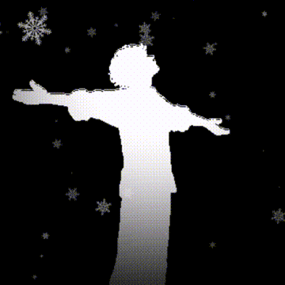

0
公开项目
0
累计 Star
0
使用语言
2026
持续更新
01
开源项目
6 个公开仓库，按最近更新排序01PHP
QQbot
QQ 官方机器人 PHP 框架。WebSocket 与 Webhook 双通道、可视化管理后台、插件机制，覆盖群聊 / 单聊 / 频道全场景。
7 个 Star
→
02TypeScript
lx-music-mobile-mod
LX Mod：基于洛雪音乐移动版的二改版。一起听网页版、WebDAV 云盘、8 档音质、主题系统。
9 个 Star
→
03TypeScript
lx-music-desktop-mod
LX Mod 桌面版：基于洛雪音乐桌面版的二改版（Windows / Linux），11 档音质、三平台「我的音乐」、云盘、本地音乐、一起听。
2 个 Star
→
04HTML
listen-together-server
LX Music 二改「一起听」的房间服务器与网页版：WebSocket 同步歌曲、进度、歌词与音频，可自建。
2 个 Star
→
05PHP
yuexia-plugins
月下 PHP 官方插件仓库 / Yuexia PHP Official Plugin Marketplace。
1 个 Star
→
06Web
yy
一言。收集与随机展示短句的小站点。
2 个 Star
→
02
最近动态
最近发布与更新QQbot 1.7.6 · 群消息私聊回复Feature
接入官方 11-17 新能力：群消息的 msg_id 可直接用于单聊接口，私聊回复该消息的发送者。后台聊天气泡新增「私聊」入口。
查看 Release →QQbot 1.7.5 · 语音转 Silk 修复Fix
修正转换接口的返回值解析：改为读取 code=1 与 data.url，失败时回落文字提示，不再把空数据传给官方 /files。
查看 Release →
03
关于我

非科班，靠拆别人的代码入门。习惯先把自己需要的东西写出来，能跑起来再谈优雅。 项目大多自用为主，顺手整理成开源，如果刚好对你有用，那挺好。
目前主要在维护 QQbot 和 LX Mod 两条线，其余视心情更新。 用得上就在仓库点个 Star，遇到问题提 Issue，我会看。
PHP
TypeScript
Rust
Python
Vue
SQLite
WebSocket
Now
维护 QQbot 与 LX Mod，补文档和插件示例；空下来折腾 Rust 与自建服务。